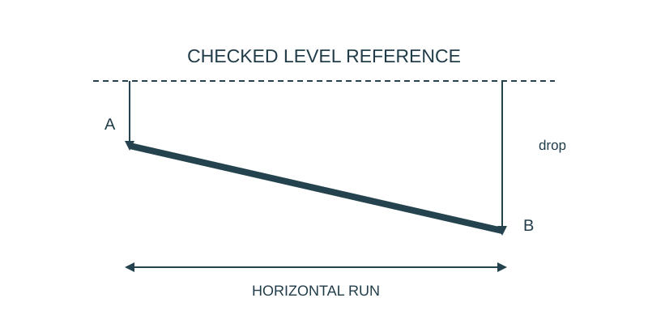

Job 18 · Establish a level reference
A checked reference line and elevation record for a low classroom model.
110 minutes • Tape measure + pocket notebook • Name: __________________ Date: __________
Materials: Checked spirit level, string and low book blocks or a low tray; tape; paper. If unavailable use supplied drawing case.
Equipment alternative: Use the supplied level-line example, construct a side-elevation paper model, and label all values supplied. Schedule the real reference check when equipment is available.

Brief · 12 min
- A tape measures length. How will you know a line is horizontal before calling a vertical difference a rise or fall?
- Set up a dated notebook spread: sketch and readings on the left; calculation, decision, test, and revision on the right. Mark small sketches NTS unless drawn to a chosen scale.
- Work in pairs and rotate roles. Each student keeps an individual notebook and performs a tool action and a calculation.
Measure · 18 min
- On a low desk model, check the spirit level on a stable surface, reverse it end for end at the same location, and compare indications.
- Use a checked horizontal reference above two endpoints A and B. Measure vertical drops to both points.
- Record reference method, endpoint labels, and actual readings.
Plan · 20 min
- Draw a side view showing the level reference and both vertical drops.
- Calculate the elevation difference and predict the direction of gravity-driven travel.
- Write one method limitation, such as sagging string or an unverified level.
Worked example
Drops from one level line are A=2 in and B=3 1/4 in. Which point is lower, and by how much? Larger downward distance from the same level line means lower elevation. B is 1 1/4 in below A. A slanted reference line would invalidate this comparison.
Make · 28 min
- Build a low paper route joining the endpoints and check its direction against the reference.
- Have a partner repeat both drop measurements.
- Resolve a discrepancy by checking the reference before changing the route.
Test · 20 min
- A horizontal reference is established independently of the tape.
- Both drops share the same reference.
- The conclusion names which endpoint is lower and by how much.
Explain · 12 min
- Complete the individual exit below before discussing answers.
- Add the test result, revision, and notebook page reference to your response. Use the notebook as evidence rather than retyping every page.
- Save the three selected responses and submit the lesson for teacher review. Show your physical work and notebook to the teacher. Clean up and return shared supplies.
Individual exit
Drops from a level line are 4 1/8 in at A and 5 3/8 in at B. Find the fall A→B. Explain what happens if the reference sags.